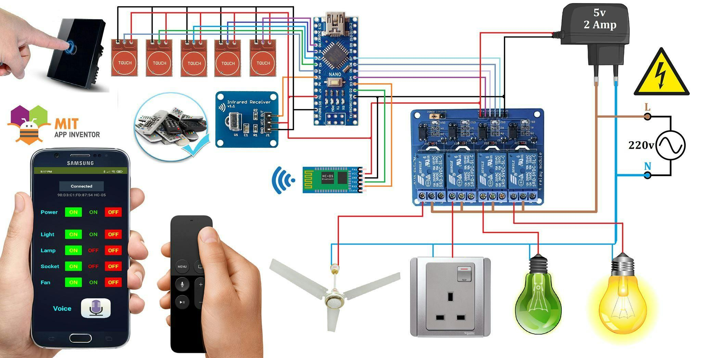
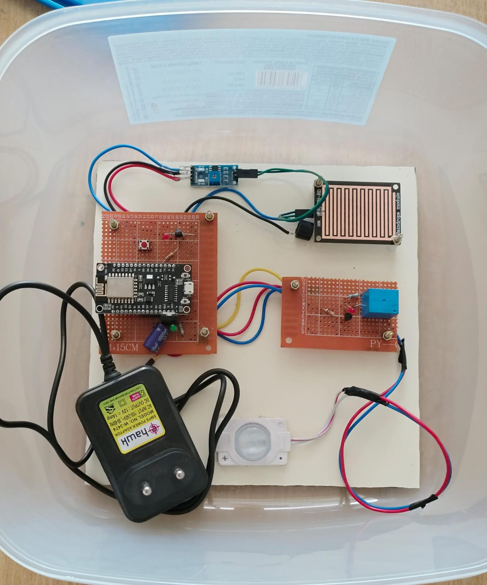
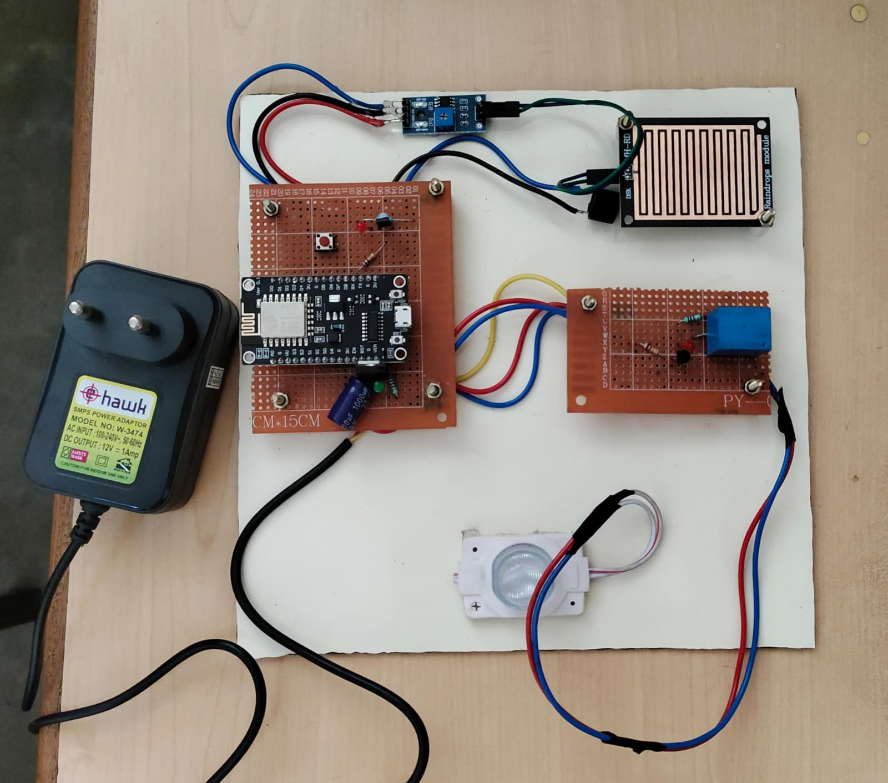

PROJECT 05
Home Automation System
A smart home automation project designed to simplify the control of household electrical appliances using an electronic control system.
Project Gallery



Project Overview
The Home Automation System is designed to make household appliance control easier and more convenient. The system uses an electronic controller to manage connected electrical appliances. It demonstrates how automation technology can be used to improve convenience and simplify everyday household operations.
Project Objective
The main objective is to develop a home automation solution that simplifies the operation of household electrical appliances. It aims to reduce manual effort, improve convenience and demonstrate the practical application of embedded systems in smart homes.
Working Principle
01. User Input
The user provides a control input through the configured control method.
02. Signal Processing
The controller receives and processes the input signal.
03. Appliance Control
The control circuit operates the connected electrical appliances according to the input.
04. Automation
The connected appliances can be controlled through the implemented automation mechanism.
Key Features
- Automated control of household appliances
- Electronic control system
- Reduces manual operation
- Convenient appliance management
- Embedded system-based implementation
- Practical smart home application